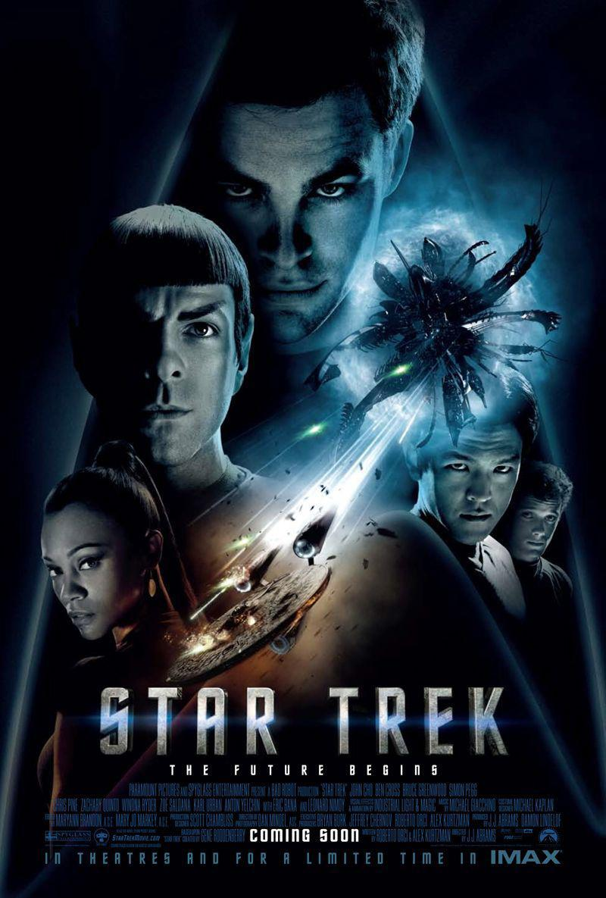

Películas de la saga Star Trek:
La saga de Star Trek está compuesta por doce películas, siendo la primera "Star Trek: la Película", y la última de la saga hasta el momento, "Star Trek: en la Oscuridad".
Películas
| Título | Año | Director |
|---|---|---|
| Star Trek: La película | 1979 | Robert Wise |
| Star Trek II: La ira de Khan | 1982 | Nicholas Meyer |
| Star Trek III: En busca de Spock | 1984 | Leonard Nimoy |
| Star Trek IV: Misión: salvar la Tierra | 1986 | Leonard Nimoy |
| Star Trek V: La última frontera | 1989 | William Shatner |
| Star Trek VI: Aquel país desconocido | 1991 | Nicholas Meyer |
| Star Trek: La próxima generación | 1994 | David Carson |
| Star Trek: primer contacto | 1996 | Jonathan Frakes |
| Star Trek: Insurrección | 1998 | Jonathan Frakes |
| Star Trek: Némesis | 2002 | Stuart Baird |
| Star Trek: El futuro comienza | 2009 | J. J. Abrams |
| Star Trek: En la oscuridad | 2013 | J. J. Abrams |
| Star Trek: más allá | 2016 | Justin Lin |